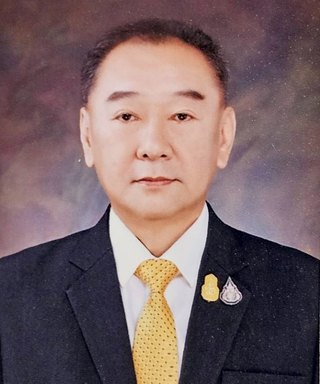

ความมั่นคงทางยาของไทยในภาวะความขัดแย้งโลก และแผนงานคณะอนุกรรมาธิการ
ครั้งที่ 9/2569 · วันอังคารที่ 31 มีนาคม 2569

ประธานในที่ประชุมนายประพนธ์ ตั้งศรีเกียรติกุลสรุปโดยย่อ
ที่ประชุมรับฟังความคืบหน้าของคณะอนุกรรมาธิการ 2 คณะ เห็นชอบเลื่อนกำหนดดูงานและสัมมนาของคณะอนุกรรมาธิการด้านระบบสุขภาพปฐมภูมิเป็นจังหวัดขอนแก่น (7–8 พ.ค. 2569) และจันทบุรี (28–29 พ.ค. 2569) และเห็นชอบตั้งคณะทำงานยกร่างพระราชบัญญัติหลักประกันสุขภาพแห่งชาติ (ฉบับที่ ..) ในคณะอนุกรรมาธิการด้านงบประมาณและธรรมาภิบาล เพื่อเสนอแนวทางปรับปรุงกฎหมายให้ระบบยั่งยืน จากนั้นศึกษาความมั่นคงทางยาของประเทศจากสถานการณ์ความขัดแย้งในหลายภูมิภาค โดย อย. ชี้แจงแนวทาง 4 ด้าน เช่น มาตรการกำกับราคายาและเวชภัณฑ์ต้นทุนสูงเมื่อเกิดภาวะฉุกเฉิน
เรื่องที่ที่ประชุมพิจารณา
- คณะอนุกรรมาธิการด้านระบบสุขภาพปฐมภูมิ: เลื่อนกำหนดดูงานและสัมมนาขอนแก่นและจันทบุรีเห็นชอบ
- ตั้งคณะทำงานยกร่างพระราชบัญญัติหลักประกันสุขภาพแห่งชาติ (ฉบับที่ ..) พ.ศ. ....เห็นชอบ
- ความมั่นคงทางยาของประเทศไทยจากสถานการณ์ความขัดแย้งทั่วโลก (อย.)พิจารณาศึกษา